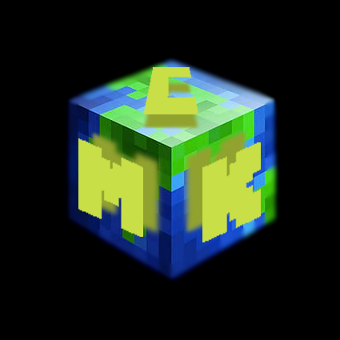

Я бы хотел вам порекомендовать СМК, который откроит двери второго сезона уже в конце июня 2024 года.Что же именно такое СМК?
СМК - это лучший приватный сервер в майнкрафте с ванильным выживанием и минимумом дополнительного контента, поддерживающий как
оффициальные так и пиратские копии игры, который откроит двери второго сезона уже в конце июня 2024 года, на который можно попасть,
купив проходку за 200 рублей или даже дешевле если вы укажете при покупке уникальный промокод yandex344. Сейчас вы можете задаться
вопросом: "Что мне делать на СМК?" - и я вам отвечу: "Вы можете выживать в одиночку, присоединиться к чужому городу или даже создать
свой собственный город, также вы можете торговать, строить красивые и функциональные постройки, создавать ивенты или учавствовать в
чужих". После столь замечательной презентации вы наверняка захотите купить проходку, для этого просто напишите одному из наших
доверенных лиц в дискорде (теги: pingvin_one | jarzektor) и просто следовать их указаниям